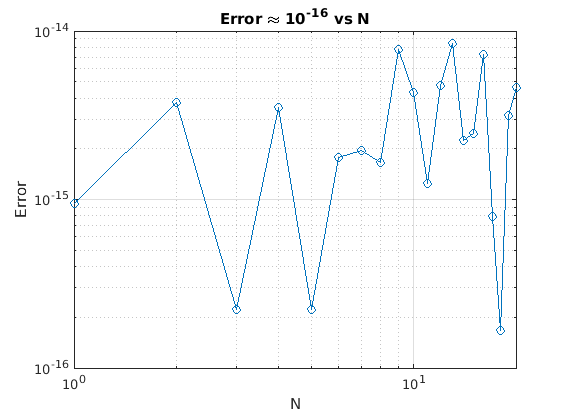
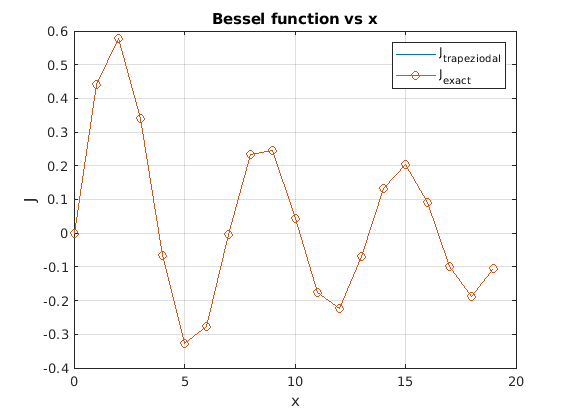

clear all;
close all;
J =@(x,t) 1/pi*cos(t -x*sin(t));
N = 20; h = 20/N; a=0; b=pi; n = 1e6; h1 = (b-a)/n;
t = linspace(0,pi,n+1);
x = [];
T = [];
for i = 0:19
x1 = i*h;
x = [x,x1];
end
for i = 1:20
T1 = (h1/2)*(J(x(i),t(1))+2*sum(J(x(i),t(2:n)))+J(x(i),t(end)));
T = [T,T1];
end
J1=besselj(1,x);
error = abs(J1 - T);
N = [1:20]';
Table = table(N(:),error(:),'VariableNames',{'N','Error'})
fprintf('Hence error values are approximately 10^-16');
fprintf('Exponential convergence, due to the fact that we are dealing with a periodic integral');
figure(1)
loglog(N,error, '-o'); grid on
xlabel('N');ylabel('Error');
title('Error \approx 10^-^1^6 vs N');
figure(2)
plot(x,T); grid on
xlabel('x');ylabel('J');
title('Bessel function vs x');
hold on
plot(x,J1,'-o');
legend('J_t_r_a_p_e_z_i_o_d_a_l','J_e_x_a_c_t')
Table =
20×2 table
N Error
__ __________
1 9.4459e-16
2 3.7748e-15
3 2.2204e-16
4 3.4972e-15
5 2.2204e-16
6 1.7764e-15
7 1.9429e-15
8 1.6575e-15
9 7.7438e-15
10 4.3299e-15
11 1.2421e-15
12 4.7462e-15
13 8.4099e-15
14 2.2343e-15
15 2.4702e-15
16 7.2442e-15
17 7.9103e-16
18 1.6653e-16
19 3.1641e-15
20 4.6213e-15
Hence error values are approximately 10^-16Exponential convergence, due to the fact that we are dealing with a periodic integral 